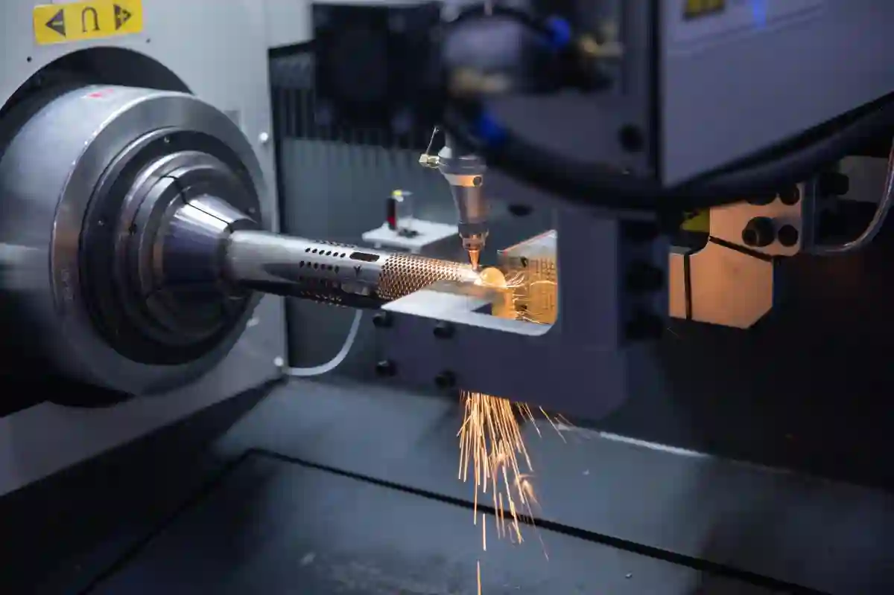
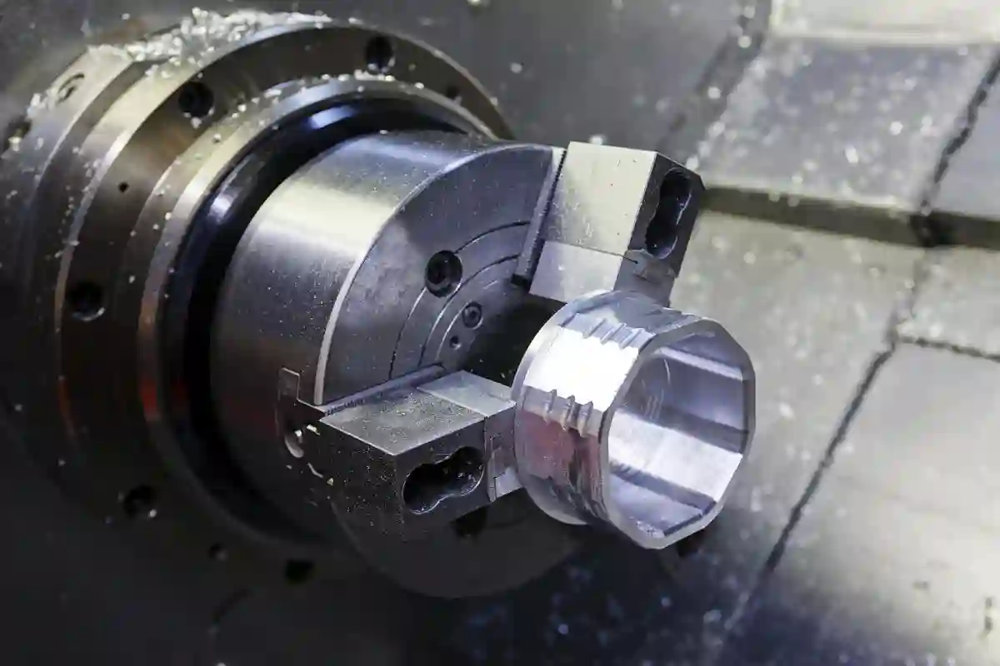
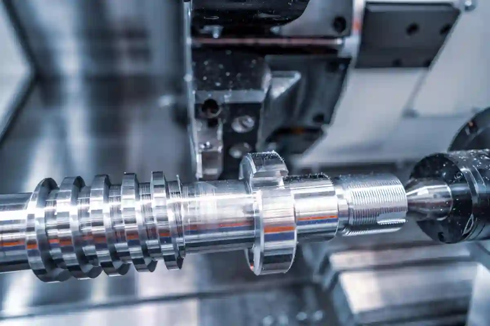

Talaşlı İmalat Süreçleri Nasıl Planlanır? – Üretim Rehberi
Talaş kaldırma esasına dayalı üretim yöntemlerinde başarı, yalnızca güçlü makine parkına sahip olmakla sınırlı değildir. Asıl fark yaratan unsur, talaşlı imalat süreçlerinin sistematik, ölçülebilir ve tekrar edilebilir şekilde planlanmasıdır. Plansız ilerleyen bir üretim hattı; termin gecikmeleri, ölçüsel sapmalar ve maliyet artışlarıyla sonuçlanır. Bu nedenle modern imalat anlayışında süreç planlama, üretimin merkezine yerleşmiştir.
Günümüzde cnc üretim süreçleri, yüksek hassasiyet ve dar toleranslar gerektirdiği için klasik yöntemlere kıyasla çok daha disiplinli bir hazırlık aşaması ister. Parça geometrisinin analizi, malzeme seçimi, takım yolu stratejileri ve operasyon sıralaması bir bütün olarak ele alınmadığında, üretim esnasında geri dönüşü zor hatalar ortaya çıkar. Bu noktada talaşlı imalat süreç planlama yaklaşımı, yalnızca teknik değil aynı zamanda stratejik bir gereklilik haline gelir.
Endüstriyel üretimde sürdürülebilir kalite hedefleyen firmalar, talaşlı imalat iş akışını standartlaştırarak hem operatör bağımlılığını azaltır hem de seri üretimde tutarlılığı sağlar. Özellikle çok operasyonlu parçalarda talaşlı imalatta işlem sırası doğru kurgulanmadığında, yüzey kalitesi bozulur ve tolerans zinciri kırılır. Bu yazıda, üretim sahasında birebir uygulanan yöntemler üzerinden süreç planlamanın nasıl yapılması gerektiğini adım adım ele alacağız.
Talaşlı İmalat Süreç Planlaması Neden Kritik Bir Aşamadır?

Talaşlı imalatın doğası gereği her parça, kendine özgü bir üretim senaryosu gerektirir. Bu nedenle süreç planlaması, yalnızca bir ön hazırlık değil; üretimin başarısını doğrudan etkileyen temel bir kontrol mekanizmasıdır. Üretim süreci planlama doğru yapıldığında, işleme süreleri kısalır, takım ömürleri uzar ve fire oranları minimum seviyeye iner.
Plansız yürütülen üretimlerde en sık karşılaşılan problem, operasyonlar arası uyumsuzluktur. Örneğin ilk bağlamada oluşturulan referans yüzeyler, sonraki işlemler için yeterli hassasiyeti sağlamıyorsa ölçüsel sapmalar kaçınılmaz olur. Bu durum, talaşlı imalat süreçleri içerisinde tekrar işleme ihtiyacını artırır ve zaman kaybına yol açar. Oysa planlı bir yapı sayesinde her işlem, bir sonraki adımı besleyecek şekilde kurgulanır.
Ayrıca modern CNC tezgâhlarında çok eksenli işleme yetenekleri bulunmasına rağmen, bu kabiliyetlerin verimli kullanımı ancak doğru planlama ile mümkündür. CNC üretim süreçleri içerisinde takım değişim sayısını azaltmak, bağlama tekrarlarını minimize etmek ve makine kullanım oranını artırmak doğrudan süreç planlamanın kalitesine bağlıdır. Bu nedenle süreç planlaması, üretim maliyetlerini kontrol altına alan stratejik bir araçtır. Bu yapı, Talaşlı İmalat Blog altında yer alan diğer teknik içeriklerle birlikte değerlendirildiğinde daha bütüncül bir üretim perspektifi sunar. Özellikle Talaşlı İmalatta Kullanılan Temel Teknikler başlıklı yazı, süreç planlamasının teknik altyapısını anlamak açısından önemli bir kaynaktır.
Üretim Hatalarının Büyük Kısmı Neden Planlama Aşamasında Başlar?
Üretim hatalarının önemli bir bölümü, parça tezgâha bağlanmadan önce yapılan varsayımlardan kaynaklanır. Yanlış belirlenen işlem sırası, hatalı bağlama stratejileri veya uygun olmayan kesici takım seçimi, üretim sırasında telafisi zor problemlere yol açar. Özellikle talaşlı imalatta işlem sırası, geometrik doğruluğun korunması açısından kritik bir faktördür.
Planlama aşamasında parça üzerindeki tüm tolerans ilişkileri değerlendirilmediğinde, her ne kadar tek tek işlemler doğru görünse de nihai parça ölçüleri hedeflenen değerleri tutturmaz. Bu durum, kalite kontrol aşamasında ortaya çıkan sürprizlerle sonuçlanır. Profesyonel bir talaşlı imalat süreç planlama yaklaşımı ise bu riskleri en baştan ortadan kaldırmayı hedefler.
Talaşlı İmalatta İş Akışı Nasıl Kurgulanmalıdır?
Etkili bir talaşlı imalat iş akışı, hammaddenin üretim sahasına girişinden nihai kontrol aşamasına kadar tüm adımların net şekilde tanımlandığı bir yapı üzerine kuruludur. İş akışı kurgulanırken her operasyonun amacı, girdileri ve çıktıları açıkça belirlenmelidir. Bu sayede üretim süreci izlenebilir ve ölçülebilir hale gelir.
İş akışının en önemli avantajlarından biri, darboğazların erken aşamada tespit edilebilmesidir. Özellikle çok parçalı veya seri üretim projelerinde, tek bir operasyondaki gecikme tüm üretim planını sekteye uğratabilir. Bu noktada cnc üretim süreçleri ile entegre bir iş akışı planı, termin yönetimini kolaylaştırır ve müşteri teslim sürelerinin güvenilirliğini artırır.
CNC Üretim Süreçleri ile Talaşlı İmalat Süreçlerinin Entegrasyonu

Modern üretim ortamlarında talaşlı imalat süreçleri, tek başına manuel planlamalarla yönetilebilecek bir yapı olmaktan çıkmıştır. Özellikle çok eksenli tezgâhların yaygınlaşmasıyla birlikte cnc üretim süreçleri, dijital planlama ve simülasyon destekli bir yaklaşıma ihtiyaç duyar. Bu entegrasyon sağlanmadığında, teorik olarak doğru görünen bir plan, üretim sahasında uygulanabilirliğini kaybeder.
CNC tabanlı üretimde süreç planlama; CAD modelinden başlayarak CAM programlama, takım seçimi, bağlama stratejileri ve işleme sırasının belirlenmesini kapsar. Bu noktada talaşlı imalat süreç planlama yaklaşımı, dijital ve fiziksel üretim arasındaki köprüyü kurar. Süreçler birbiriyle uyumlu şekilde tasarlanmadığında, tezgâh başında yapılan manuel müdahaleler artar ve standart üretim disiplini bozulur.
Bu entegrasyonun doğru kurulabilmesi için CNC süreçlerine özel planlama mantığının benimsenmesi gerekir. Özellikle benzer parça ailelerinde standart operasyon setleri oluşturmak, talaşlı imalat iş akışı açısından büyük avantaj sağlar. Bu yaklaşım, hem programlama süresini kısaltır hem de üretim tekrarlarında kalite tutarlılığı sağlar. Konunun detaylı uygulama adımları CNC Üretim Süreçleri Nasıl Planlanır? başlıklı içerikte kapsamlı biçimde ele alınmaktadır.
Operasyon Bazlı CNC Süreç Planlaması Nasıl Yapılır?
Operasyon bazlı planlama, her bir işleme adımının bağımsız değil, zincirin bir halkası olarak değerlendirilmesini esas alır. Bu yaklaşımda talaşlı imalatta işlem sırası, yalnızca malzeme kaldırma mantığıyla değil; referans yüzeylerin korunması ve ölçü zincirinin sürekliliğiyle birlikte ele alınır. Özellikle hassas tolerans gerektiren parçalarda bu yaklaşım kritik önem taşır.
CNC operasyonları planlanırken ilk hedef, mümkün olan en az bağlama sayısıyla maksimum işleme alanı elde etmektir. Bu sayede hem zaman kaybı azalır hem de bağlamadan kaynaklı hata riski minimize edilir. Doğru kurgulanmış cnc üretim süreçleri, operatör bağımlılığını azaltarak üretimi daha öngörülebilir hale getirir.
Üretim Süreci Planlama ile Termin Yönetimi Arasındaki İlişki
Üretim planlaması yalnızca teknik bir konu değildir; aynı zamanda müşteri memnuniyetini doğrudan etkileyen operasyonel bir disiplindir. Üretim süreci planlama aşamasında yapılan hatalar, genellikle teslim tarihine yaklaşıldığında fark edilir ve bu durum işletmeler için ciddi bir risk oluşturur. Bu nedenle süreç planlaması ile termin yönetimi birlikte ele alınmalıdır.
Talaşlı imalatta termin yönetimi, her operasyonun süre tahmininin gerçekçi yapılmasına bağlıdır. Yanlış öngörülen işleme süreleri, tezgâh doluluk oranlarını bozar ve sonraki işlerin planlanan takvimden sapmasına neden olur. Bu durum özellikle seri üretim projelerinde zincirleme gecikmelere yol açar. Termin yönetimiyle süreç planlamasının nasıl entegre edilmesi gerektiği CNC Üretimde Termin ve Teslim Süresi Nasıl Yönetilir? içeriğinde detaylı olarak açıklanmaktadır.
Gerçekçi Süre Tahmini Neden Kritik Bir Faktördür?
Gerçekçi olmayan süre tahminleri, üretim sahasında baskı oluşturur ve kaliteyi olumsuz etkiler. Operatörler zaman baskısı altında daha yüksek ilerleme hızları kullanmak zorunda kalabilir; bu da takım aşınmasını artırır ve yüzey kalitesini düşürür. Profesyonel bir talaşlı imalat süreçleri planlaması, bu tür riskleri öngörerek üretimi dengeli şekilde organize eder.
Makine Parkı ve Kapasite Planlamasının Süreçlere Etkisi
Bir üretim tesisinin sahip olduğu makine parkı, süreç planlamasının sınırlarını belirleyen en önemli unsurlardan biridir. Tezgâh tipleri, eksen sayıları ve teknik kapasiteler dikkate alınmadan yapılan planlamalar, kağıt üzerinde mükemmel görünse bile sahada uygulanabilir olmaz. Bu nedenle talaşlı imalat süreç planlama, mutlaka mevcut makine parkı gerçekleriyle uyumlu olmalıdır.
Kapasite planlaması yapılırken her tezgâhın günlük ve haftalık kullanılabilir süresi net olarak tanımlanmalıdır. Bu yaklaşım, darboğaz oluşturan makinelerin erken tespit edilmesini sağlar. Özellikle çok operasyonlu parçalarda cnc üretim süreçleri, doğru makine dağılımı yapılmadığında verimsiz hale gelir. Üretim altyapısının bu açıdan nasıl yapılandırıldığı Makine Parkı sayfasında detaylı biçimde sunulmaktadır.
Ayrıca Türkiye’de talaşlı imalat sektörüne yönelik genel kapasite ve sanayi altyapısı hakkında resmi veriler, Sanayi ve Teknoloji Bakanlığı’nın yayımladığı raporlarda yer almaktadır. Bu kapsamda T.C. Sanayi ve Teknoloji Bakanlığı – İstatistiki Bilgiler adresindeki üretim istatistikleri, sektörel karşılaştırmalar için güvenilir bir referans niteliğindedir.
Talaşlı İmalatta İşlem Sırası Nasıl Belirlenmelidir?

Talaş kaldırma esaslı üretimde işlem sırası, parçanın nihai doğruluğunu belirleyen en kritik faktörlerden biridir. Talaşlı imalat süreçleri, yalnızca hangi işlemlerin yapılacağını değil, bu işlemlerin hangi sırayla gerçekleştirileceğini de kapsar. Yanlış kurgulanmış bir sıra, en hassas CNC tezgâhlarında dahi ölçü kaçmalarına neden olabilir.
İşlem sırası belirlenirken temel prensip, referans yüzeylerin korunmasıdır. İlk operasyonlar genellikle parça üzerinde ölçüsel ve geometrik referans oluşturacak yüzeyleri hedef alır. Bu yaklaşım, sonraki işlemlerin stabil ve tekrarlanabilir olmasını sağlar. Talaşlı imalatta işlem sırası, parça geometrisine göre değişse de bu temel ilke her zaman geçerlidir.
Üretim sahasında sık yapılan hatalardan biri, operasyonların yalnızca talaş kaldırma miktarına göre sıralanmasıdır. Oysa talaşlı imalat süreç planlama, her adımın bir sonraki işlem üzerindeki etkisini hesaba katar. Bu sayede tolerans zinciri bozulmadan, ölçüsel süreklilik korunur.
Kaba İşleme – Yarı Finiş – Finiş Ayrımı Neden Yapılmalıdır?
Profesyonel üretim planlamasında işlemler genellikle kaba işleme, yarı finiş ve finiş olarak ayrılır. Bu ayrım, takım ömrünü uzattığı gibi yüzey kalitesini de kontrol altına alır. Kaba işlemede yüksek ilerleme ve derinlik değerleri kullanılırken, finiş işlemlerinde ölçü hassasiyeti ön plana çıkar.
Bu yaklaşım cnc üretim süreçleri içinde standart bir metodoloji olarak kabul edilir. Ancak bu adımların sırası ve her birine ayrılan süre, parça toleranslarına göre yeniden şekillendirilmelidir. Plansız yapılan finiş işlemleri, parça üzerinde geri dönüşü zor hatalara yol açabilir.
Tolerans Zinciri ve Süreç Planlaması Arasındaki Doğrudan Bağlantı
Tolerans zinciri, bir parçadaki tüm ölçülerin birbirini nasıl etkilediğini tanımlar. Talaşlı imalat süreçleri içerisinde toleranslar tek tek değil, bir bütün olarak değerlendirilmelidir. Aksi halde her ölçü ayrı ayrı doğru olsa bile nihai parça fonksiyonunu yerine getiremeyebilir.
Süreç planlaması sırasında toleransların hangi operasyonda elde edileceği net olarak belirlenmelidir. Kritik ölçülerin mümkün olduğunca son işlemlerde verilmesi, hataların birikmesini önler. Bu yaklaşım, özellikle yüksek hassasiyet gerektiren parçalarda talaşlı imalat iş akışının temel yapı taşlarından biridir.
Kalite kontrol adımlarının da süreç planlamaya entegre edilmesi gerekir. Ara kontroller, tolerans zincirinin kırıldığı noktaları erken aşamada tespit etmeyi sağlar. Türkiye’de ölçüm ve kalite standartlarına ilişkin temel referanslardan biri olan TSE – Türk Standardları Enstitüsü üzerinden yayınlanan teknik dokümanlar, tolerans yönetimi açısından güvenilir bir kaynaktır.
Ölçüm Stratejileri Süreç Planlamaya Nasıl Dahil Edilir?
Ölçüm yalnızca üretim sonunda yapılan bir doğrulama adımı değildir. Doğru kurgulanmış üretim süreci planlama, ölçüm adımlarını operasyonlar arasına yerleştirir. Bu sayede sapmalar büyümeden kontrol altına alınır.
Özellikle seri üretimde, ölçüm noktalarının standartlaştırılması kalite sürekliliğini sağlar. Bu yaklaşım, operatör farklarını minimize ederek talaşlı imalat süreç planlama kalitesini doğrudan artırır.
Gerçek Üretim Sahasından Süreç Planlama Deneyimleri
Teorik olarak doğru görünen birçok plan, üretim sahasında beklenen sonucu vermez. Bunun temel nedeni, planlama aşamasında saha gerçeklerinin yeterince dikkate alınmamasıdır. Talaşlı imalat süreçleri, yalnızca mühendislik hesaplarıyla değil; makine davranışları ve operatör deneyimiyle birlikte ele alınmalıdır.
Örneğin aynı parça, iki farklı CNC tezgâhında farklı sonuçlar verebilir. Bunun nedeni rijitlik farkları, spindle karakteristikleri veya bağlama ekipmanlarıdır. Bu nedenle süreç planlaması yapılırken, hangi operasyonun hangi tezgâhta yapılacağı net olarak tanımlanmalıdır. Bu yaklaşım, Talaşlı İmalatta Kullanılan Temel Teknikler içeriğinde detaylandırılan uygulama prensipleriyle doğrudan ilişkilidir.
Gerçek üretim deneyimine dayalı planlamalar, zaman içinde revize edilerek olgunlaşır. Bu revizyonlar sayesinde cnc üretim süreçleri, her yeni üretimde daha verimli hale gelir ve işletme içinde kurumsal bir bilgi birikimi oluşur.
Süreç Planlamada Maliyet, Zaman ve Kalite Dengesi Nasıl Kurulur?
Başarılı bir üretim yönetimi, maliyet, zaman ve kalite arasında sürdürülebilir bir denge kurmayı gerektirir. Talaşlı imalat süreçleri, bu üç parametreden yalnızca birine odaklanıldığında uzun vadede verimsiz hale gelir. Örneğin yalnızca süreyi kısaltmaya yönelik yapılan planlamalar, takım aşınmasını hızlandırarak kaliteyi düşürebilir; yalnızca kaliteye odaklanan aşırı muhafazakâr planlamalar ise maliyetleri yükseltebilir.
Bu nedenle talaşlı imalat süreç planlama yaklaşımı, her operasyonun bu üç başlık üzerindeki etkisini birlikte değerlendirmelidir. İşleme parametrelerinin belirlenmesinde yalnızca katalog değerleri değil, gerçek saha verileri esas alınmalıdır. Böylece cnc üretim süreçleri, teorik değil uygulanabilir bir plan üzerinden yürütülür.
Zaman–maliyet–kalite dengesinin kurulmasında parça sınıflandırması önemli bir araçtır. Kritik toleranslı parçalar ile genel amaçlı parçalar için aynı planlama mantığını kullanmak, kaynakların yanlış kullanılmasına neden olur. Bu noktada üretim süreci planlama, parça fonksiyonunu merkeze alarak esnek bir yapı kazanmalıdır.
Standart Operasyon Setleri Verimliliği Nasıl Artırır?
Benzer parça aileleri için oluşturulan standart operasyon setleri, planlama süresini ciddi ölçüde azaltır. Bu yaklaşım, her yeni işte sıfırdan planlama yapma ihtiyacını ortadan kaldırır ve üretimde tutarlılık sağlar. Özellikle seri üretim projelerinde talaşlı imalat iş akışı, bu standartlar sayesinde öngörülebilir hale gelir.
Standart operasyonlar aynı zamanda maliyet analizini de kolaylaştırır. Her bir operasyon için geçmiş üretim verilerine dayalı süre ve maliyet bilgileri oluşturulduğunda, tekliflendirme süreci daha sağlıklı yürütülür. Bu yaklaşım, CNC Üretim Süreçleri Nasıl Planlanır? içeriğinde ele alınan dijital planlama mantığıyla doğrudan örtüşür.
Talaşlı İmalatta Verimlilik Artıran Süreç Planlama Stratejileri
Verimlilik, yalnızca daha hızlı üretmek anlamına gelmez; aynı zamanda kaynakları doğru kullanmak demektir. Talaşlı imalat süreçleri içinde verimliliği artıran en önemli stratejilerden biri, operasyonlar arası geçişlerin optimize edilmesidir. Takım değişim sürelerinin azaltılması, bağlama tekrarlarının minimize edilmesi ve gereksiz ölçüm adımlarının elenmesi bu kapsamda değerlendirilir.
Bir diğer kritik strateji, makine–parça uyumunun doğru kurulmasıdır. Her parçayı en gelişmiş tezgâhta üretmek her zaman en verimli çözüm değildir. Doğru tezgâh seçimi, cnc üretim süreçleri açısından hem kapasite kullanımını dengeler hem de darboğaz oluşumunu engeller. Bu yaklaşım, işletmenin genel üretim performansını doğrudan etkiler.
Verimlilik analizlerinde dış referanslardan faydalanmak da önemlidir. Türkiye’de sanayi verimliliği ve üretim performansına ilişkin güncel çalışmalar, Türkiye İstatistik Kurumu (TÜİK) adresinde yayımlanan istatistiklerle takip edilebilir. Bu veriler, sektörel kıyaslama yapmak isteyen üretim yöneticileri için güvenilir bir kaynaktır.
Dijital İzleme ve Geri Bildirim Döngüsü Neden Gereklidir?
Süreç planlaması statik bir doküman değildir. Üretim sırasında elde edilen geri bildirimler, planın sürekli olarak güncellenmesini gerektirir. Dijital izleme sistemleri sayesinde operasyon süreleri, duruş nedenleri ve kalite sapmaları anlık olarak analiz edilebilir. Bu veriler, bir sonraki talaşlı imalat süreç planlama revizyonunun temelini oluşturur.
Bu döngü sayesinde talaşlı imalat süreçleri, her yeni projede daha olgun ve verimli hale gelir. Kurumsal bilgi birikimi, kişilere değil sistemlere bağlı olarak gelişir.
Talaşlı İmalat Süreçleri Bütüncül Olarak Nasıl Yönetilmelidir?
Talaş kaldırma esaslı üretimde başarı, tek bir doğru karara değil; birbiriyle uyumlu çok sayıda planlama adımına bağlıdır. Talaşlı imalat süreçleri, parça tasarımının analizinden başlayarak makine seçimi, operasyon sırası, ölçüm stratejileri ve termin yönetimine kadar uzanan geniş bir yapıyı kapsar. Bu yapı, ancak bütüncül bir bakış açısıyla ele alındığında sürdürülebilir sonuçlar üretir.
Üretimde sıklıkla karşılaşılan sorunlardan biri, her sürecin kendi içinde optimize edilip genel sistemin göz ardı edilmesidir. Oysa talaşlı imalat iş akışı, bir zincir gibi değerlendirilmelidir. Zincirin en güçlü halkası bile, zayıf bir adım nedeniyle işlevini yitirebilir. Bu nedenle süreç planlaması, yalnızca mühendislik departmanının değil; üretim, kalite ve planlama ekiplerinin ortak çalışmasıyla şekillenmelidir.
Bu yaklaşım, Talaşlı İmalat Blog altında yer alan tüm içeriklerin temelini oluşturan stratejik üretim anlayışıyla doğrudan örtüşür. Bilgi tek başına yeterli değildir; önemli olan bu bilginin sahaya nasıl aktarıldığıdır.
Standartlaşma ile Esneklik Arasındaki Denge Nasıl Kurulur?
Standart süreçler, üretimde istikrar sağlar; ancak her projeyi tek bir şablona zorlamak esnekliği ortadan kaldırır. Profesyonel talaşlı imalat süreç planlama, bu iki kavram arasında dengeli bir yapı kurmayı hedefler. Temel operasyon adımları standartlaştırılırken, parça özelinde gerekli revizyonlara açık bir sistem oluşturulmalıdır.
Bu denge, özellikle farklı sektörlere üretim yapan işletmeler için kritik öneme sahiptir. Aynı makine parkı üzerinde farklı tolerans ve kalite beklentilerine sahip parçalar üretildiğinde, cnc üretim süreçleri ancak bu esnek standartlar sayesinde sağlıklı yönetilebilir.
Süreç Planlamasında Stratejik Karar Noktaları
Her süreç planlaması, belirli kritik karar noktaları içerir. Bu noktalar genellikle ilk bağlama stratejisi, referans yüzey seçimi ve kritik ölçülerin hangi operasyonda verileceği gibi adımlarda yoğunlaşır. Talaşlı imalatta işlem sırası, bu kararların en somut yansımasıdır.
Stratejik olarak doğru kararlar alındığında, üretim süreci yalnızca teknik açıdan değil; ticari açıdan da avantaj sağlar. Daha kısa termin süreleri, daha öngörülebilir maliyetler ve daha az revizyon ihtiyacı, işletmenin rekabet gücünü artırır. Bu durum, üretim süreci planlama disiplininin işletme geneline yayıldığında ortaya çıkan doğal bir sonuçtur.
Bu noktada sektörel iyi uygulamaları takip etmek önemlidir. Türkiye’de imalat sanayine yönelik süreç yönetimi ve verimlilik çalışmaları, TMMOB Makina Mühendisleri Odası üzerinden yayınlanan teknik makaleler ve raporlar aracılığıyla izlenebilir. Bu tür kaynaklar, stratejik bakış açısını güncel tutmak açısından değerlidir.
Talaşlı İmalat Süreçlerinde Doğru Planlama Neyi Değiştirir?
Doğru planlanmış talaşlı imalat süreçleri, yalnızca üretim hattını değil; işletmenin tamamını dönüştürür. Plansız üretimde yaşanan stres, belirsizlik ve sürekli müdahale ihtiyacı ortadan kalkar. Yerine öngörülebilir, ölçülebilir ve sürekli geliştirilebilir bir üretim yapısı gelir.
Bu yapı sayesinde cnc üretim süreçleri, operatör tecrübesine bağımlı olmaktan çıkar ve kurumsal bir bilgi sistemine dönüşür. Yeni personel adaptasyonu hızlanır, kalite dalgalanmaları azalır ve müşteri güveni artar. Tüm bu kazanımlar, süreç planlamasının stratejik bir yatırım olarak ele alınmasıyla mümkün olur.
Bu anlayışın sahadaki teknik altyapı ile nasıl desteklendiği ve hangi üretim kabiliyetleriyle hayata geçirildiği, Makine Parkımız sayfasında detaylı olarak sunulmaktadır. Bu tür şeffaflık, hem iş ortakları hem de potansiyel müşteriler için güçlü bir güven sinyali oluşturur.
Sonuç – Talaşlı İmalat Süreçleri Neden Stratejik Bir Disiplindir?
Özetle, talaşlı imalat süreçleri yalnızca üretim sırasını belirleyen teknik bir doküman değildir. Aksine, işletmenin kalite anlayışını, teslimat performansını ve rekabet gücünü doğrudan şekillendiren stratejik bir disiplindir. Bu süreçler ne kadar sistematik ve veriye dayalı kurgulanırsa, üretim sonuçları da o kadar tutarlı ve sürdürülebilir olur.
Günümüz rekabetçi imalat ortamında fark yaratan firmalar, süreç planlamasını bir defalık bir çalışma olarak değil; sürekli gelişen yaşayan bir sistem olarak ele alanlardır. Bu yaklaşım benimsendiğinde talaşlı imalat süreç planlama, yalnızca bugünün ihtiyaçlarını değil; geleceğin üretim hedeflerini de karşılayacak bir altyapı oluşturur.